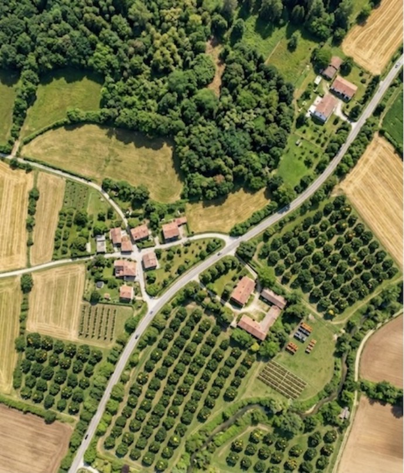
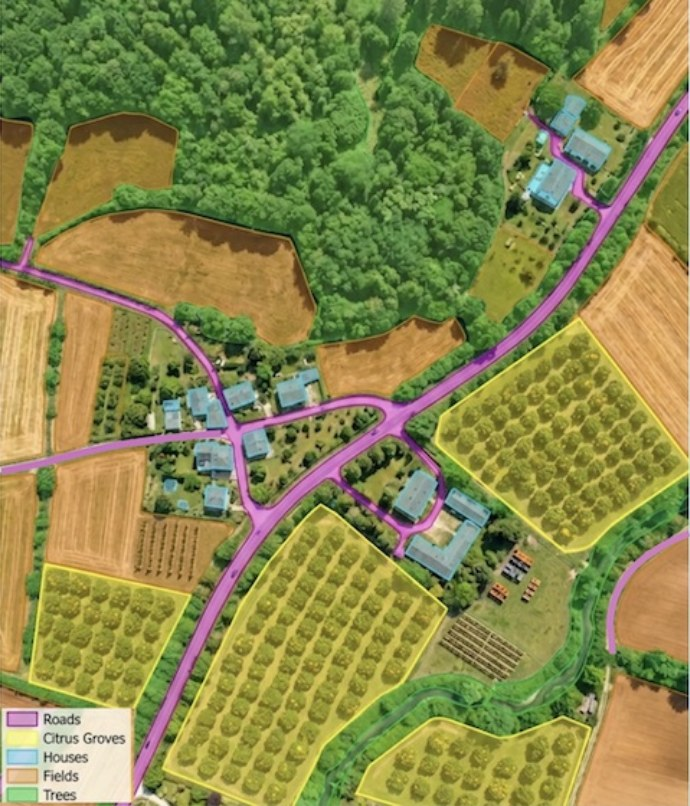
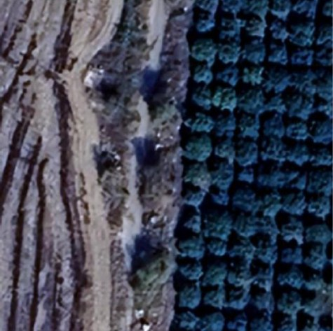
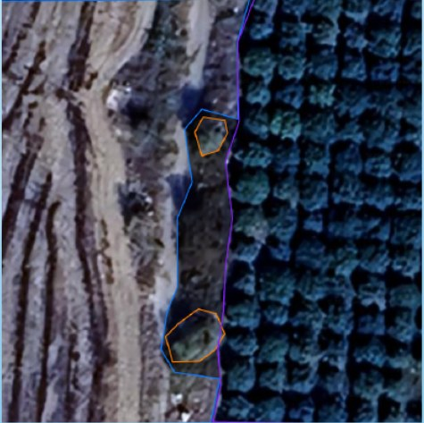
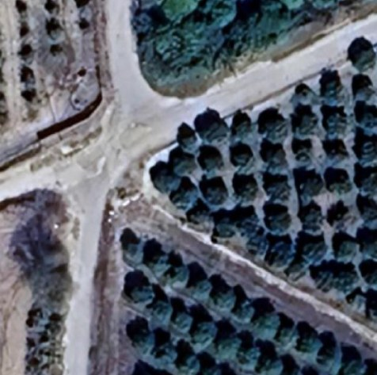
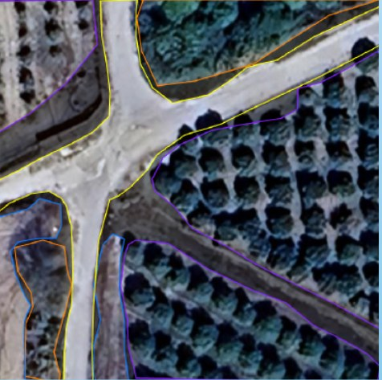
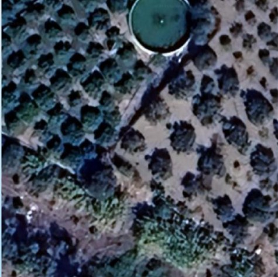
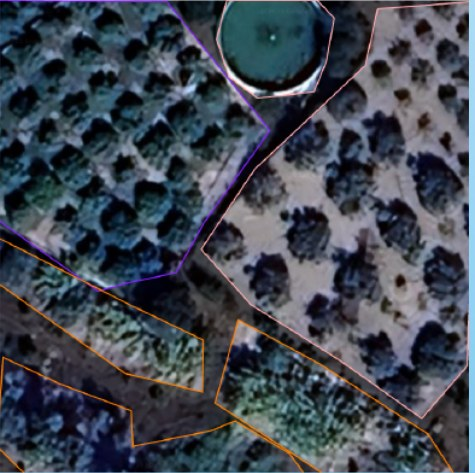

Since 2025
Aerial and satellite imagery
Computer vision and deep learning, object detection and segmentation, on real aerial and satellite images of Sicily, on a dataset I built: by May 2026, 605 images, 3,926 annotated instances and 11 categories. A hybrid YOLO-C3 pipeline, a pixel-based classifier plus YOLO, designed for drones. And a study of what LLMs can and cannot see in aerial images.


roads · citrus groves · houses · fields
YOLO-C3 output on an aerial image.


YOLO masks


YOLO masks


YOLO masks
Three images from the dataset, Sicily. Image source: Google Maps.